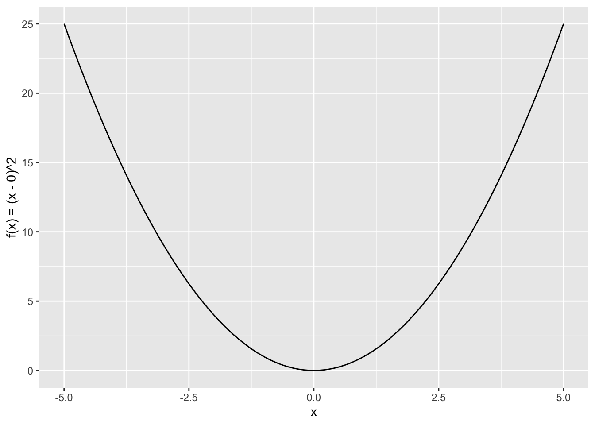
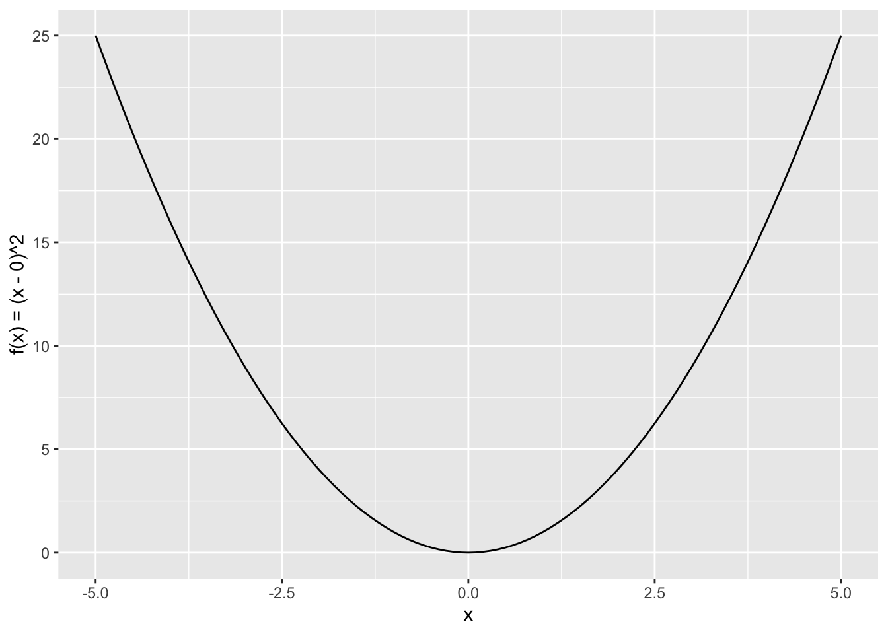
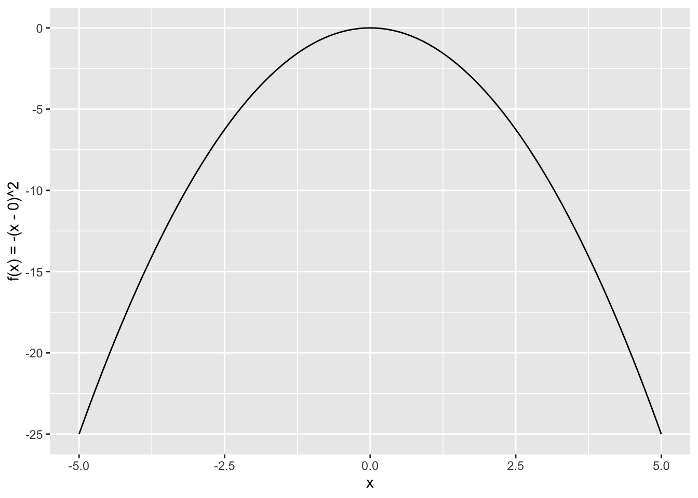
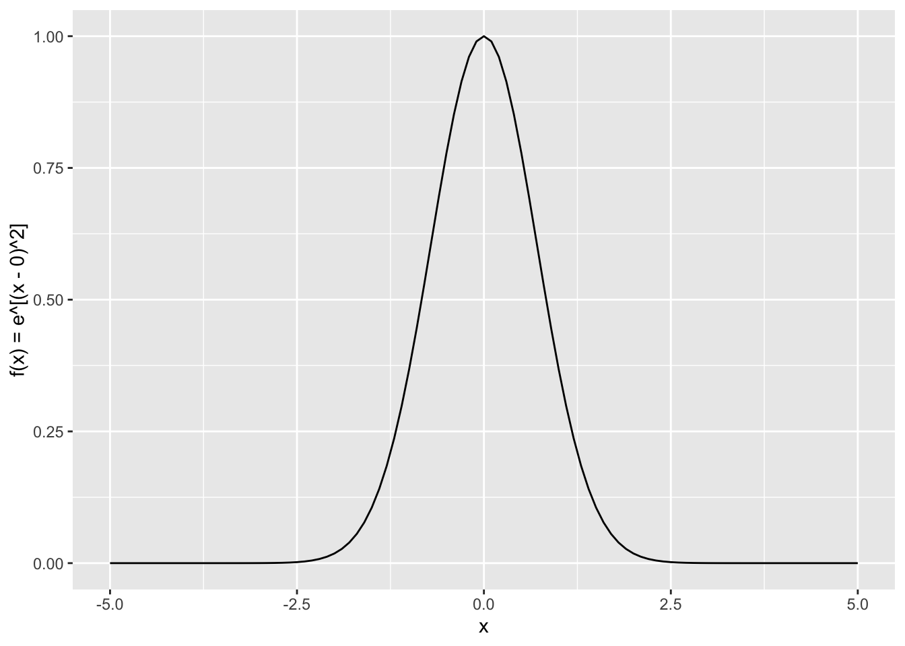
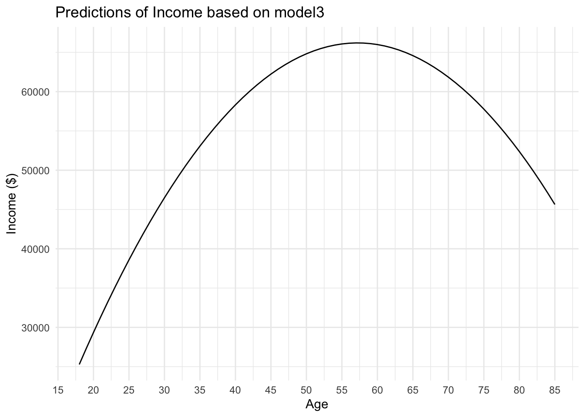
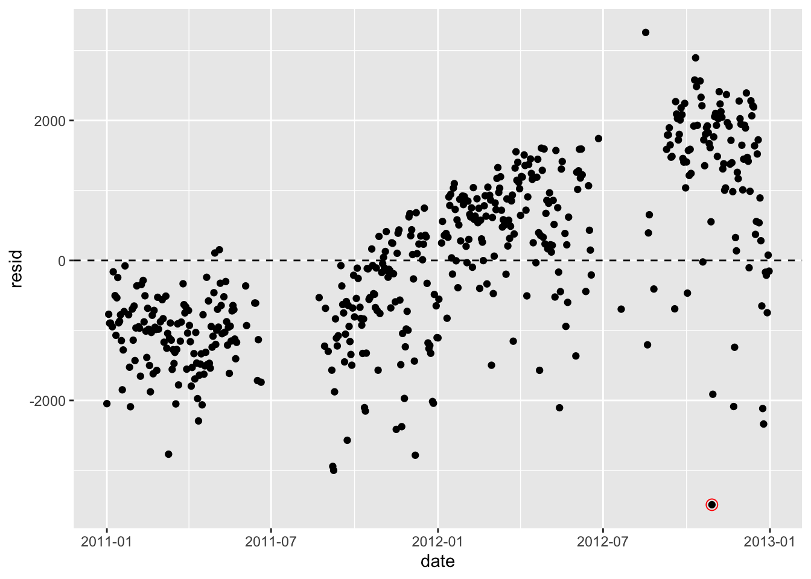

my_function1 <- function(x) {
return((x - 0)^2)
}
# Plotting the function
ggplot(data = data.frame(x = c(-5, 5)), aes(x = x)) +
xlim(-5, 5) +
geom_function(fun = my_function1) +
labs(x = "x", y = "f(x) = (x - 0)^2")
Plot the following functions in R (\(\mu=0\)):
\(f(x) = (x-\mu)^2\)
my_function1 <- function(x) {
return((x - 0)^2)
}
# Plotting the function
ggplot(data = data.frame(x = c(-5, 5)), aes(x = x)) +
xlim(-5, 5) +
geom_function(fun = my_function1) +
labs(x = "x", y = "f(x) = (x - 0)^2")
\(f(x) = -(x-\mu)^2\)
my_function2 <- function(x) {
return(-(x - 0)^2)
}
# Plotting the function
ggplot(data = data.frame(x = c(-5, 5)), aes(x = x)) +
xlim(-5, 5) +
geom_function(fun = my_function2) +
labs(x = "x", y = "f(x) = -(x - 0)^2")
\(f(x) = e^{(x-\mu)^2}\)
my_function3 <- function(x) {
return(exp(-(x - 0)^2))
}
# Plotting the function
ggplot(data = data.frame(x = c(-5, 5)), aes(x = x)) +
xlim(-5, 5) +
geom_function(fun = my_function3) +
labs(x = "x", y = "f(x) = e^[(x - 0)^2]")
What is the squared root of \(\pi\)?
sqrt(pi)[1] 1.772454What is the area under the curve for \(f(x) = 1/\sqrt{(\pi)}*e^{-x^2}\)?
integrate(f = \(x) (1/sqrt(pi))*exp(-x^2), lower = -Inf, upper = Inf)1 with absolute error < 2.4e-06Go to the GSS data for 2018 and use a normal linear regression to estimate height from male (an indicator variable equals 1 when sex == "male").
d <- gss18 |>
select(height, age, sex, coninc) |>
haven::zap_missing() |>
haven::zap_labels() |>
mutate(
male = if_else(sex== 1, 1L, 0L),
) |>
mutate(age = as.integer(age)) |>
mutate(age_squared = age^2) |>
drop_na()
model1<-glm(height ~ male, data = d, family = gaussian(link="identity"))
tidy(model1)# A tibble: 2 × 5
term estimate std.error statistic p.value
<chr> <dbl> <dbl> <dbl> <dbl>
1 (Intercept) 64.4 0.115 561. 0
2 male 5.66 0.166 34.1 5.28e-183Based on the model1 , when the respondent is not male (\(x_1=0\)), their height on average is expected to be about 64 inches (\(\alpha=64.421129\)). If the respondent is male (\(x_1=1\)), the respondent is on average expected to be about 6 inches taller (\(\beta_1=5.662732\)).
Adding age as a second predictor
model2<-glm(height ~ male + age, data = d, family = gaussian(link="identity"))
tidy(model2)# A tibble: 3 × 5
term estimate std.error statistic p.value
<chr> <dbl> <dbl> <dbl> <dbl>
1 (Intercept) 64.5 0.283 228. 0
2 male 5.66 0.166 34.0 7.43e-183
3 age -0.00114 0.00592 -0.193 8.47e- 1Based on the model2 , when the respondent is not male (\(x_1=0\)) and has an age of 0 (\(x_2=0\)), the height is expected to be about 64 inches (\(\alpha=64.471097124\)). However, this intercept value is not logical, so we shouldn’t rely on it for any meaningful interpretation (how could a 0 year-old female be over 5 feet tall?). If the respondent is male (\(x_1=1\)), the respondent is predicted to be about 6 inches taller (\(\beta_1=5.663306354\)). Then, for every 1-year increase in age, the respondent’s height is expected to decrease by about -0.0014 inches (\(\beta_2=-0.001144869\)).
Predicting coninc from age and age_squared
model3<-glm(coninc ~ age + age_squared, data = d, family = gaussian(link="identity"))
tidy(model3)# A tibble: 3 × 5
term estimate std.error statistic p.value
<chr> <dbl> <dbl> <dbl> <dbl>
1 (Intercept) -20914. 10463. -2.00 4.58e- 2
2 age 3046. 477. 6.39 2.35e-10
3 age_squared -26.6 5.11 -5.21 2.17e- 7\(\beta_0\) is the same as the \(\alpha\) coefficient in other models (e.g., intercept-value if all predictor variables are 0). So, in this model, the inflation-adjusted family income is $30,088.1848 when age and (and therefore \(age^2\)) equal 0. We can’t really interpret this intercept value in a meaningful way, though, because an infant is not going to have any source of income!
Plot the predictions from this model using a new dataset that contains ages 18 to 85
grid<-tibble(age = 18:85) |>
mutate(age_squared = age^2)
# Generate predictions using the model
grid$predicted_coninc <- predict(model3, newdata = grid)
# Plotting the predictions along with the original data
ggplot(data = grid, aes(x = age, y = predicted_coninc)) +
geom_line() +
labs(x = "Age", y = "Income ($)") +
ggtitle("Predictions of Income based on model3") +
scale_x_continuous(breaks = seq(15, 90, by = 5)) +
theme_minimal()
Transform the age variable so that it’s centered around the mean
d <- d |>
mutate(age_centered = age - mean(age, na.rm = TRUE)) |>
mutate(age_squared_centered = age_centered^2)Refitting model3 with the age variable centered
model3_agerecentered<-glm(coninc ~ age_centered + age_squared_centered, data = d, family = gaussian(link="identity"))
tidy(model3_agerecentered)# A tibble: 3 × 5
term estimate std.error statistic p.value
<chr> <dbl> <dbl> <dbl> <dbl>
1 (Intercept) 61476. 1512. 40.7 6.03e-235
2 age_centered 709. 83.2 8.52 4.22e- 17
3 age_squared_centered -26.6 5.11 -5.21 2.17e- 7When I transformed the age variable to be centered around the mean and re-ran model3, the \(\beta_2\) coefficient before the \(age_i^2\) term stays the same, while the intercept (\(\beta_0\)) and \(\beta_1\) coefficients both changed. Here, the \(\beta_0\) coefficient indicates the average income of people at the average age ($61,475.68).
Transform the age variable so that it’s in standard deviations away from the mean.
d <- d |>
mutate(age_std = (age - mean(age, na.rm = TRUE)) / sd(age, na.rm = TRUE)) |>
mutate(age_std_squared = age_std^2)Refitting model3 with the age variable in standard deviations away from the mean.
model3_age_std<-glm(coninc ~ age_std + age_std_squared, data = d, family = gaussian(link="identity"))
tidy(model3_age_std)# A tibble: 3 × 5
term estimate std.error statistic p.value
<chr> <dbl> <dbl> <dbl> <dbl>
1 (Intercept) 61476. 1512. 40.7 6.03e-235
2 age_std 9964. 1169. 8.52 4.22e- 17
3 age_std_squared -5253. 1008. -5.21 2.17e- 7Compared to the age-centered model, the intercept term (\(\beta_0\)) remains the same; it still refers to the average income of people at the average age ($61,475.68). Because \(\beta_1\) and \(\beta_2\) are both connected to the same predictor (age/age squared), it makes more sense to interpret them together rather than separately. For every one standard deviation increase in age and age squared, income is expected to increase by $9,964.19 and decrease by $5,253.47, respectively.
d <- gss18 |>
select(marital, coninc, sex) |>
mutate(
coninc = haven::zap_label(coninc),
sex = haven::as_factor(sex),
marital = haven::as_factor(marital)
) |>
drop_na() |>
mutate(married = if_else(marital == "married", 1L, 0L)) |>
mutate(male = if_else(sex == "male", 1L, 0L))
d |>
group_by(married) |>
summarize(
avg_coninc = mean(coninc, na.rm = TRUE),
sd = sd(coninc, na.rm = TRUE),
n = n()
) |>
mutate(std_error = sd / n())# A tibble: 2 × 5
married avg_coninc sd n std_error
<int> <dbl> <dbl> <int> <dbl>
1 0 36818. 34643. 1229 17321.
2 1 67492. 45378. 923 22689.Fit a regression model that predicts coninc from married .
model4 <- glm(coninc ~ married, data = d, family = gaussian(link="identity"))
tidy(model4)# A tibble: 2 × 5
term estimate std.error statistic p.value
<chr> <dbl> <dbl> <dbl> <dbl>
1 (Intercept) 36818. 1130. 32.6 1.11e-189
2 married 30674. 1725. 17.8 4.17e- 66Compare the results to the previous dplyr table. What do you notice?
The intercept (unmarried) value predicted by the regression model is equal to the unmarried value in the dplyr table: $36,818. The married value in the regression model must be calculated by adding together \(\beta_0\) and \(\beta_1\); in the dplyr table, the married value is given.
Calculate the standard error by plugging in the corresponding values in the dplyr table. Compare this value to the standard error corresponding to the married coefficient. Do they look similar?
sqrt(
((34642.61^2)/1229) +
((45378.47^2)/923)
)[1] 1790.945Yes, the standard error I calculated with the dplyr values is close to the standard error corresponding to the married coefficient.
d |>
group_by(male, married) |>
summarize(coninc = mean(coninc, na.rm = TRUE))`summarise()` has grouped output by 'male'. You can override using the
`.groups` argument.# A tibble: 4 × 3
# Groups: male [2]
male married coninc
<int> <int> <dbl>
1 0 0 33561.
2 0 1 66760.
3 1 0 41015.
4 1 1 68292.Fit a normal linear regression that predicts coninc from sex and married.
model5 <- glm(coninc ~ male*married, family = gaussian(link="identity"), data = d)
tidy(model5)# A tibble: 4 × 5
term estimate std.error statistic p.value
<chr> <dbl> <dbl> <dbl> <dbl>
1 (Intercept) 33561. 1502. 22.3 1.45e-99
2 male 7454. 2273. 3.28 1.06e- 3
3 married 33199. 2345. 14.2 1.40e-43
4 male:married -5921. 3457. -1.71 8.68e- 2| male | married | coninc | regression output |
|---|---|---|---|
| 0 | 0 | 33560.78 | \(\beta_0\) |
| 0 | 1 | 66759.76 | \(\beta_0\)+\(\beta_2\) |
| 1 | 0 | 41014.66 | \(\beta_0\)+\(\beta_1\) |
| 1 | 1 | 68292.14 | \(\beta_0\)+\(\beta_1\)+\(\beta_2\)+\(\beta_1\)*\(\beta_2\) |
You will have to fit a normal linear regression that predicts the number of bikeshare rides using windspeed, weekend, and temp_feel as predictors. Before doing that, make sure you center windspeed and temp_feel around their mean values.
data(bikes, package = "bayesrules")
df <- bikes |>
mutate(windspeed_centered = windspeed - mean(windspeed, na.rm = TRUE)) |>
mutate(temp_feel_centered = temp_feel - mean(temp_feel, na.rm = TRUE))
model6 <- glm(rides ~ windspeed_centered + weekend + temp_feel_centered,
data = df,
family = gaussian(link="identity"))
tidy(model6)# A tibble: 4 × 5
term estimate std.error statistic p.value
<chr> <dbl> <dbl> <dbl> <dbl>
1 (Intercept) 3683. 65.0 56.7 6.98e-219
2 windspeed_centered -32.8 10.1 -3.26 1.20e- 3
3 weekendTRUE -714. 122. -5.83 1.02e- 8
4 temp_feel_centered 78.0 4.98 15.7 3.26e- 45If the temperature and the wind speed are average, what is the expected ridership for a weekend day? What is the expected ridership for a weekday?
If the temperature and the wind speed are average, the expected ridership for a weekend day would be \(3683.44216 - 713.57504=\) 2,970 riders. For a weekday, the expected ridership would be 3,684 (\(\beta_0\)).
Repeat the exercise above, but fit a Poisson model instead.
model7 <- glm(rides ~ windspeed_centered + weekend + temp_feel_centered,
data = df,
family = poisson(link="log"))
tidy(model7)# A tibble: 4 × 5
term estimate std.error statistic p.value
<chr> <dbl> <dbl> <dbl> <dbl>
1 (Intercept) 8.17 0.000897 9113. 0
2 windspeed_centered -0.00970 0.000142 -68.5 0
3 weekendTRUE -0.217 0.00179 -121. 0
4 temp_feel_centered 0.0231 0.0000711 324. 0If the temperature and the wind speed are average, what is the expected ridership for a weekend day?
exp(8.174544543)*exp(-0.216722079)[1] 2857.843What is the expected ridership for a weekday?
exp(8.174544543)[1] 3549.438mod_normal <- glm(rides ~ windspeed + temp_feel + weekend, data = bikes, family = "gaussian")
bikes$resid <- residuals(mod_normal)
bikes |>
ggplot(aes(date, resid)) +
geom_point() +
geom_hline(yintercept = 0, linetype = "dashed") +
geom_point(
data = filter(bikes, abs(resid) == max(abs(resid))),
color = "red", shape = 21, size = 3
)
What can you tell me about the model fit? Why do you think the model fits poorly?
The model does not appear to fit very well—the residuals are not normally distributed around the 0 line. As the date increases, the residuals seems to increase as well. We should consider revising the terms of this model.
Use dplyr to figure out the date of the observation with the largest residual (shown circled in red). Why is the model so poor at predicting the number of bikeshare rides this day?
bikes |>
select(date, rides,resid) |>
slice(which.min(resid)) date rides resid
1 2012-10-29 20 -3490.348This large, negative residual was from October 29, 2012, which was when Hurricane Sandy made landfall over the Eastern Seaboard! It makes sense that the model would overpredict the number of bikes on the road that day.